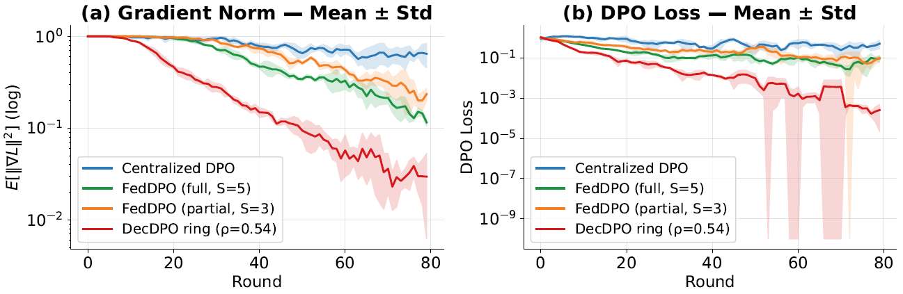
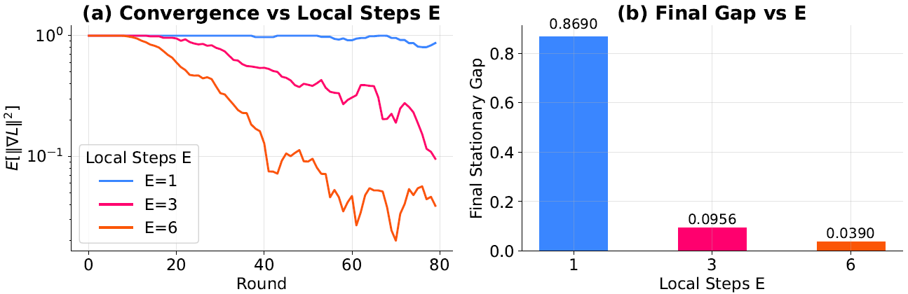
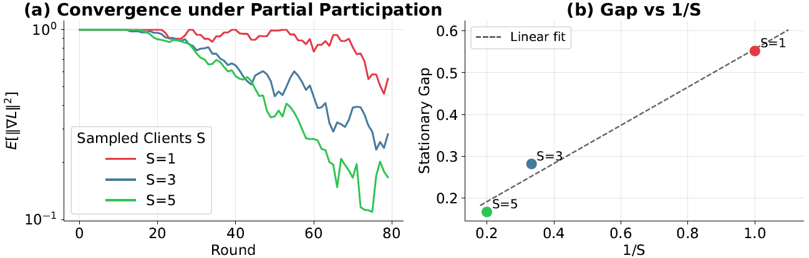
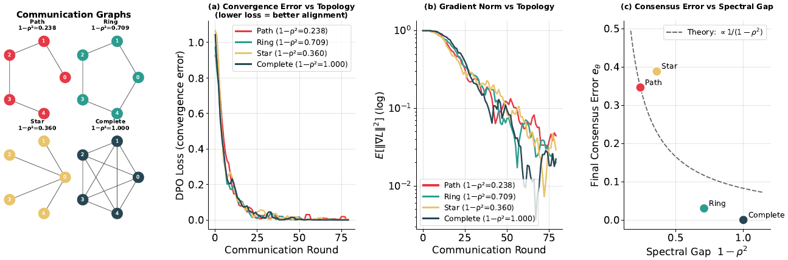
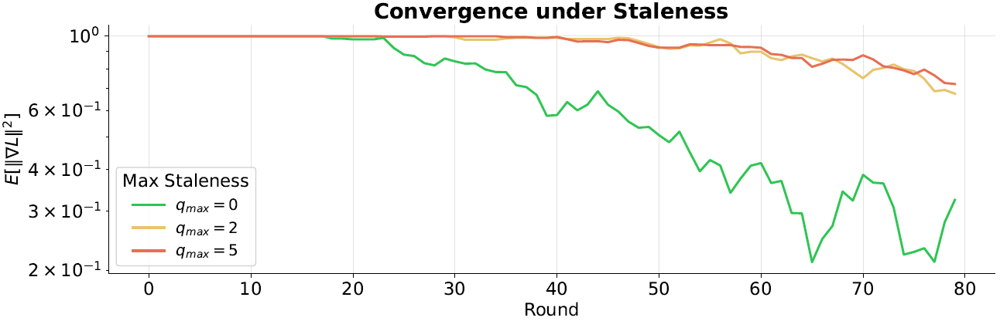

More results, videos, and interactive plots available in the paper.
@article{yourlastname2025awesome,
title = {Distributed Direct Preference Optimization},
author = {Jiang, Zhanhong},
journal = {International Conference on Machine Learning (ICML)},
year = {2026},
url = {https://arxiv.org/abs/xxxx.xxxxx}
}
Please cite our paper if you find it useful.